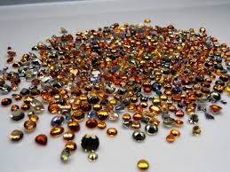
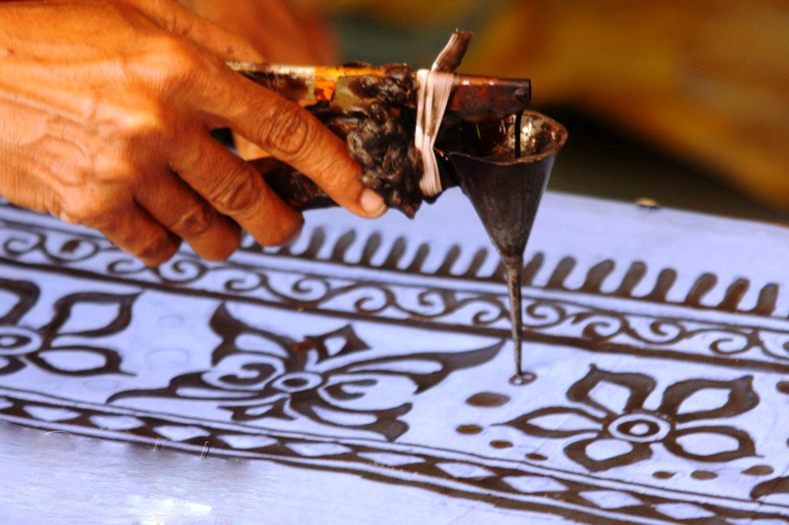
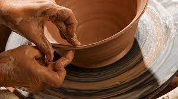

Purchase and Donate
With varying climates and geography packed into a small island Sri Lanka offers a range of
adventures from the top of the
mountains to the depth of the oceans.
So many an adventures packed within few miles of each other Sri Lanka is an adventures itself waiting to happen.
Mask Making

At a time when the people worshipped trees and animals, masks were an indispensable part of Sri Lankan rituals and ceremonies. Now centuries later they are more of an interesting oddity.
Lackquar Works

Today the oveans filled with coral gardens, multitude
of extoic fishes, and ancient wrecks Sri Lanka offers one of the best diving
experience.
Jwellary Making
Sri Lanka has a long traditional association with the global gem and jewellery trade and has been known as the cradle of treasures for its precious, natural gemstones.
Batik Clothes
In its purest form batik is a method of decorating a piece of cloth by creating pattern on it with wax and colouring rest of the piece of cloth, creating a vibrant mosaic with coloured and uncoloured areas. Painstaking and time consuming, Batik was originally a hobby of the elitists in Kandyan court. The aristocratic ladies of the central kingdom were skilled practitioners of batik and soon the skills of batik were introduced to the artesian classes, who developed tapestry, regional flags and traditional clothes of the aristocrats with batik fabrics.
Wood Craving

It is mentioned that carving of wood in Sri Lanka started a very long time ago. It was during the time when Buddhism was first introduced to the island by Reverend Mahinda. When he came here, he was also accompanied by an entourage of 18 cast members, and one of them was a wood craftsman. So from that day onwards to date timber carving has been in our culture and Buddhist custom
Clay Items
Sri Lankan decorative pottery is an ancient legacy, etched into clay dating back to over 1000 BC. Archaeological excavations have discovered sophisticated burial urns and figurines predating the Island's written history. These sophisticated forms speak of the ingenuity of the Island's early inhabitants. Fragments of pottery unearthed in scattered locations across the country can be pieced together to reveal the development of a creative people who resourcefully gathered alluvial deposits from the flood plains of the country's river systems to make utilitarian implements that would facilitate their lifestyle